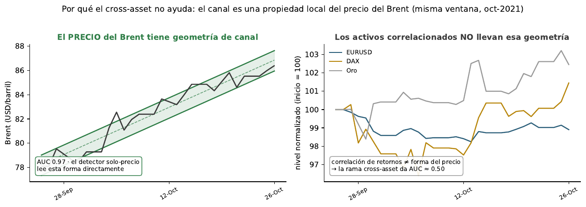
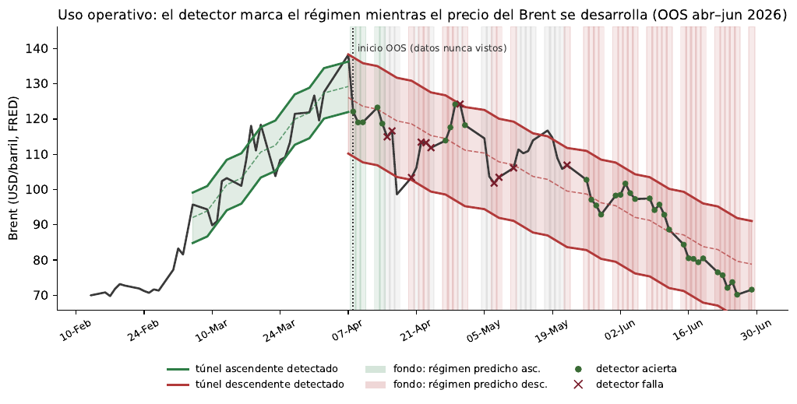
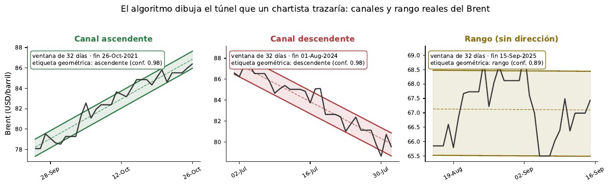

01Qué es el proyecto
Una primera capa de chartismo automatizado: un sistema objetivo, versionado y reproducible que clasifica la geometría reciente del precio del Brent. No pretende predecir el mercado — el propio proyecto demuestra con rigor que eso no es posible con este esquema — sino dar a la función de riesgos una lectura morfológica diaria, auditable y estable.
Brent (FRED)
Serie DCOILBRENTEU 2007–2026. Panel macro de 37 series y 180 variables para los experimentos cross-asset.
Supervisión débil geométrica
Reglas sobre extremos locales, pendiente y R² definen 8 patrones chartistas; sin etiquetado manual.
Imagen + CNN
GASF del nivel, GADF de retornos y mapa de la serie → EfficientNet-B1 (ImageNet, congelada) → cabeza logística por patrón.
López de Prado
CV purgada con embargo, walk-forward multipath, out-of-time 2020–2026, OOS real 2026, PSR/DSR/PBO.
02Cómo funciona
03Hallazgo 1 — Los canales son detectables con fiabilidad casi clínica
AUC out-of-time (entrenando hasta ago-2020, evaluando 2020–2026: COVID, guerra, ciclos 2023–25). La sorpresa: la imagen construida solo con el precio supera a todas las variantes con información multiactivo.
Canal ascendente — AUC
Canal descendente — AUC
La línea del azar es AUC 0.5: la rama tabular cross-asset aislada no contiene señal geométrica.
04Hallazgo 2 — El cross-asset no aporta (y se demuestra con bootstrap)
Sabemos que el EURUSD correlaciona históricamente ~0.5 con el Brent, y por eso se probó un tercer canal con equities, índices y divisas. Pero correlación de retornos no es información sobre la forma local del precio: añadirla diluye la señal morfológica. ΔAUC = AUC(solo-precio) − AUC(rival), bootstrap estratificado B=3000:
Punto = ΔAUC medio · barra = intervalo de confianza 95% (bootstrap estratificado, B=3000). Los cuatro IC quedan íntegramente a la derecha del 0, luego la mejora del detector solo-precio es estadísticamente significativa. Frente a la rama tabular sola, ΔAUC ≈ +0.47/+0.49 (fuera de escala). P(solo-precio gana) = 100%.

05Hallazgo 3 — Estable en el tiempo y validado en OOS real de 2026
AUC según la edad del modelo (65 cortes rolling-origin)
| Edad | Ascendente | Descendente |
|---|---|---|
| 1–3 meses | 0.883 | 0.867 |
| 3–6 meses | 0.908 | 0.892 |
| 6–12 meses | 0.919 | 0.908 |
Sin decaimiento → la geometría del canal es invariante al régimen. Recalibración anual es suficiente. La ventana adaptativa por régimen tampoco mejora: la fija de 32 días ya es óptima.
Out-of-sample genuino: abr–jun 2026 (n=83, entrenado ≤ mar-2026)
| Patrón | AUC | Acc. | F1 | Prec. | Recall |
|---|---|---|---|---|---|
| Ascendente | 1.000 | 0.976 | 0.875 | 1.000 | 0.778 |
| Descendente | 0.902 | 0.819 | 0.851 | 0.827 | 0.878 |
Datos descargados de FRED después de cerrar el diseño: la prueba más dura contra el data snooping. Caveat: muestra de 3 meses.

06Hallazgo 4 — Detectar el patrón no da ventaja de trading
Estrategia larga-en-ascendente / corta-en-descendente sobre 395 sesiones OOS no solapadas (2020–2026), evaluada con las correcciones de López de Prado:
+1.7% vs +97.1%
La estrategia de canal frente al buy & hold del propio Brent en el mismo periodo.
0.33 vs 1.00
Y con dispersión enorme entre folds walk-forward (de −3.4 a +4.9).
≈ 0 (1.7·10⁻⁶)
El máximo Sharpe esperable por azar tras 7 pruebas era 4.04: el 0.33 observado no sobrevive la deflación.
0.38
12.870 combinaciones: probabilidad relevante de que la mejor config in-sample falle out-of-sample.
07Chartismo por capas — qué figuras existen de verdad en el Brent
Antes del detalle, así es como el algoritmo "dibuja" el patrón sobre casos reales del Brent: traza el mismo túnel que un chartista marcaría a mano, con la recta central y las paralelas que tocan los extremos.

Extendiendo el detector binario a las 8 figuras del etiquetador (out-of-time 2020–2026):
El cuello de botella de las figuras de vuelta no es el modelo: es su frecuencia real en el Brent y la cobertura del etiquetador geométrico (8 clases). Triángulos, cuñas o banderines exigirían nuevas reglas de etiquetado.
08Marco de riesgo — control de capital en 4 capas
El mandato del Risk Director no es predecir la dirección, sino controlar el capital y sobrevivir a los regímenes. La evidencia empírica delimita el papel de cada pieza: la volatilidad (predecible) manda el tamaño; el detector (fiable) describe el régimen; la dirección (no predecible) queda prohibida como criterio de sizing.
| Hallazgo empírico | Implicación para riesgo |
|---|---|
| Dirección no predecible (corr ≈ 0) | Prohibido dimensionar capital por "señal direccional" |
| Chartismo no pasa el backtest (DSR ≈ 0, MaxDD −59%) | El patrón no justifica subir tamaño; sirve de challenge al desk |
| Volatilidad sí predecible (persistencia 0.32–0.45) | Palanca central: sizing y límites por riesgo |
| Detección de canal fiable y estable (AUC 0.97) | Descriptor de régimen, no alfa |
| Cross-asset define correlación, no dirección | Agregación del riesgo de cartera, no el trade |
Cuadro de mando (5 paneles, semáforo aviso · brecha)
| Panel (capa) | Métricas y gatillos |
|---|---|
| A · Sizing (C1) | σ prevista (EWMA λ=0.94 / GARCH); tamaño objetivo wᵢ; vol realizada/objetivo >1.2 recortar · >1.5 de-risk 50% |
| B · Límites (C2) | Bruto >85% · ≥100% bloquea; neto acotado (no hay edge); concentración >25% · >35% activo / >50% sector; drawdown −8% · −12% flat |
| C · Régimen (C3) | pred_canal + confianza por activo; % cartera contra-régimen >30% → revisión; cambio de régimen (conf >0.7, ≥2 días) → recalcular VaR/correlación; conf media <0.5 → no accionar |
| D · Cartera (C4) | VaR/ES 1d 99%; correlación móvil 60d ρ̄>0.6; ratio diversificación <1.3; excepciones VaR (Kupiec/Christoffersen) |
| E · Salud modelo | Edad de la cabeza >12m → recalibrar; dato >3 días → congelar señal; PSI confianza >0.2; dos relojes: régimen anual · vol/correlación diario |
channel_detector.py predict → Panel C. Multi-commodity: una
cabeza logística por activo, mismo enfoque solo-precio.09Hoja de ruta — mejoras propuestas
Priorización tras la revisión completa del proyecto (detalle en
docs/MEJORAS_PROPUESTAS.md y Anexo D del documento LaTeX).
Investigación
- Ampliar el etiquetador geométrico (triángulos, cuñas, banderines, taza-con-asa): el cuello de botella de la capa 2 es la cobertura de reglas, no el modelo.
- Restricción de orden pred_low ≤ pred_return ≤ pred_high en la CNN multitarea (elimina inversiones soporte/resistencia).
- OOS trimestral continuo (jul–sep 2026…) con FRED como fuente única: evidencia acumulada a coste mínimo.
- Calibración de probabilidades (Platt/isotónica) con curvas de fiabilidad: en riesgo la probabilidad debe estar calibrada, no solo ordenar.
- Baseline no-CNN (logística sobre features geométricas simples) para blindar la elección de EfficientNet ante el comité.
- Módulo de volatilidad dedicado (GARCH/HAR-RV) para la Capa 1: es forecastable, pero no con este pipeline de imágenes.
Ingeniería y datos
- Tests mínimos + CI: etiquetador sobre ventanas sintéticas, invariantes de purga/embargo, determinismo del encoding.
- YAML como fuente única de configuración (el JSON duplicado está en sincronía hoy, pero es riesgo de deriva).
- Rama TensorFlow a contrib/: funcional pero no ejercitada por ningún resultado entregado.
- Regenerar demo_predictions.csv con calendario de días hábiles (hereda fines de semana del reindexado antiguo).
- Vintages FRED documentados (~1.19 USD de diferencia media con el CSV original; fuente única ya aplicada en el OOS).
- Nodos BCE AAA: recuperarlos o retirar su mención del descargador.
10Entregables y reproducibilidad
Entregables
results/reports/brent_canal_resultados.xlsx 8 JSON de métricas detector_canal_heads.joblib predicciones OOS (CSV) docs/CCN_BRENT_canal (LaTeX) run_manifest.json
El Excel consolidado (8 hojas) contiene resumen ejecutivo, comparativa out-of-time, OOS 2026, recalibración, cross-asset, predicciones diarias, ventana adaptativa y el argumento bootstrap — cada cifra trazable a su JSON.
Reproducir
Cápsula formato Code Ocean (Docker + semillas fijas). Run base:
/code/run. Detector de canal:
python code/channel_detector.py train \
--config code/config_codeocean.yaml --cutoff 2020-08-20
python code/channel_detector.py predict \
--prices brent.csv --out preds.csv